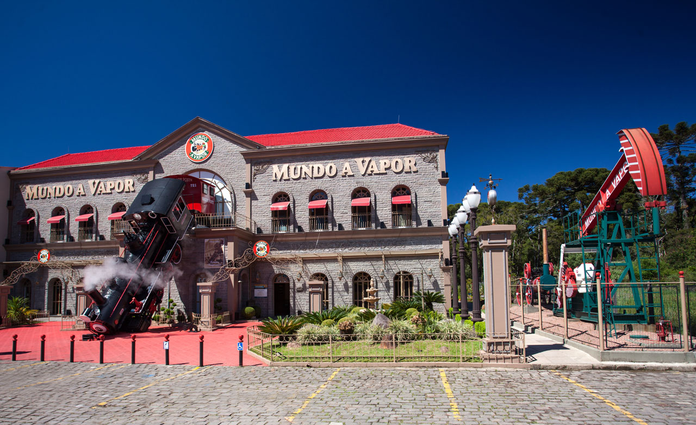

 |
Turismo
A cidade destaca-se como centro de grandes eventos (congressos, seminários e encontros) além de sediar anualmente um dos mais tradicionais festivais de cinema da América Latina: o Festival Brasileiro e Latino de Cinema, durante o qual são distribuídos os prêmios Kikito. Outros eventos importantes e que atraem milhares de turistas são o festival natalino conhecido como Natal Luz e a Festa da Colônia, esta uma das festividades mais integradora dos grupos que colonizaram a região: açorianos, alemães e italianos.
Entre as atrações mais visitadas pelos turistas estão o Harley Motor Show, Hollywood Dream Cars, Salão do Super Carros, Mirante Vale do Quilombo, o lago Negro, o lago Joaquina Bier, o pórtico de entrada via Taquara, o pórtico de entrada via Nova Petrópolis, o Mini Mundo, a Cascata Véu de Noiva, a Aldeia do Papai Noel, no Parque Knorr, o Palácio dos Festivais, a Praça das Bandeiras, a rua Madre Verônica (rua coberta), a praça Major Nicoletti, a Igreja São Pedro, o centro de cultura, o Museu dos Festivais de Cinema, igreja luterana, fábricas de chocolate, Museu de Cera Dreamland, inaugurado em dezembro de 2009, entre outros.
Outro local que merece uma visita é o Museu Medieval, situado num castelo estilo medieval (o qual vem sendo construído durante os últimos 30 anos, exclusivamente por uma única pessoa, seu proprietário), além de exibir brasões e armas medievais, também abriga o único Museu de Cutelaria do Brasil, exibindo facas, espadas, adagas etc., de todas as partes do mundo.
Além do turismo familiar e de grupos, Gramado tem se tornado referência no turismo de negócios. Em virtude deste novo nicho, a cidade construiu uma estrutura para abrigar todos os tipos de atividade. O Gramado Serra Park e a ExpoGramado são espaços que juntos somam 35 000 metros quadrados de área e que possuem infraestrutura suficiente para abrigar grandes feiras. Hotéis como o Serra Azul e o Serrano apresentam centros de convenção com equipamentos adequados para a realização de painéis e debates. Além desses, o Palácio dos Festivais também pode servir de auditório e a Universidade Federal do Rio Grande do Sul construiu seu próprio Centro de Eventos e Treinamentos no município.
Diversos eventos como congressos e festivais ocorrem em Gramado durante todo o ano. Durante o Inverno, por exemplo, há o Estação Gramado, o principal evento nesta época do ano. A cidade recebe outros grandes eventos, como o Festival de Cinema de Gramado, Natal Luz, como também a Festa da hortênsias, Chocofest, Festival Internacional de Publicidade a Fenim (Feira Nacional da Indústria da Moda), entre outros.
Culinária
A culinária do Estado de São Paulo se desenvolveu,
principalmente, no período de povoamento da capital, entre os séculos
XVI e XVII. Os pratos trazem produtos facilmente encontrados na terra,
como o milho e o trigo.
Durante a colonização, os bandeirantes aderiram também aos hábitos dos
índios, por motivos de sobrevivência. A farinha de mandioca já era parte
da alimentação, por resistir a longas expedições.
As regiões do estado apresentam também diferentes costumes. No litoral,
os elementos da cultura portuguesa, como bolinhos e ensopados, são
predominantes. Já no interior, a culinária tem mais traços da tradição
dos tropeiros e os pratos levam mandioca frita e feijão gordo , por
exemplo. Entre os pratos populares, está o virado à paulista, o bauru .
e, na capital, o lanche de mortadela. Uma curiosidade é que o bauru foi criado na capital.
|
|